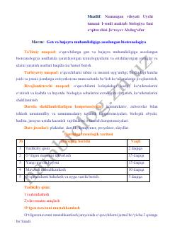

GVGen va hujayra muhandisligi asoslari boʻyicha maktab oʻquvchilari uchun dars ishlanmasi.
Ushbu qoʻllanma maktab oʻquvchilari uchun gen va hujayra muhandisligi asoslari, biotexnologik usullar hamda ularning zamonaviy tibbiyot va sanoatdagi ahamiyatini tushuntiradi. Dars ishlanmasi shaklida tayyorlangan mazkur material mavzuni mustahkamlash uchun testlar va amaliy savollarni oʻz ichiga oladi.